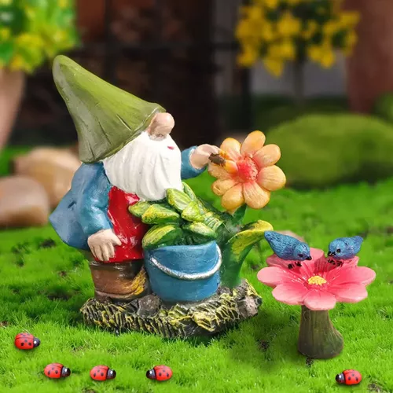

Nuestro compromiso es proporcionar un entorno lleno de imaginación y aprendizaje para los corazones jóvenes y curiosos. Hemos dedicado cada día a cultivar mentes brillantes y a sembrar semillas para un futuro prometedor.
Nuestro jardín de infantes es un espacio mágico donde la diversión y el aprendizaje van de la mano. Nos enorgullecemos de ser más que un centro de cuidado infantil: somos un hogar lejos de casa, un lugar donde la risa, la creatividad y el descubrimiento son la base de cada experiencia.
Con un equipo de educadores apasionados y comprometidos, creemos en nutrir cada chispa individual. Cada niño es único, y nuestro enfoque centrado en el niño garantiza que sus habilidades únicas sean valoradas y fomentadas. Desde las aulas vibrantes hasta los espacios al aire libre, cada rincón de nuestro jardín está diseñado para inspirar la curiosidad y el asombro.
Nuestra filosofía educativa se basa en el juego como una herramienta fundamental para el aprendizaje. A través del juego, los niños exploran, experimentan y adquieren habilidades cruciales para su desarrollo. Fomentamos la colaboración, la resolución de problemas y la toma de decisiones, creando cimientos sólidos para un aprendizaje a lo largo de la vida.
Nuestro plan de estudios diverso abarca desde actividades artísticas y creativas hasta exploraciones científicas y aventuras literarias. Cada día, los pequeños se embarcan en viajes emocionantes de descubrimiento, donde el mundo que les rodea se convierte en su aula de enseñanza. Trabajamos en estrecha colaboración con padres y tutores para asegurarnos de que cada niño alcance su máximo potencial.
